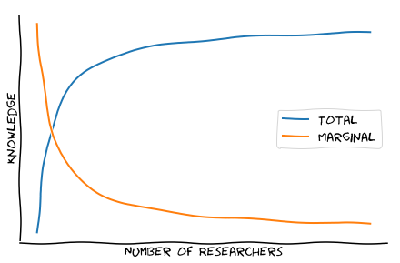

Open Research 6: Why Deep Learning Research Doesn't Matter
Why Deep Learning Research Doesn’t Matter
I started a PhD in deep learning because it was a fast moving field that was having growing impact on the world, and dreams of even greater developments. Even without any AGI dreams, deep learning would transform many industries. So by doing deep learning research I would maximize my impact, right?
I’ve slowly realized how incorrect this assumption was. While the field as a whole is incredibly important, the impact of most research is negligible. The average researcher produces almost nothing of value, and academia ends up being an intense fight over credit assignment.
Let’s use our imagination and pretend I’m a top researcher for a minute. What kind of impact can I have if my wildest delusions come true?
Overestimation of Impact
Even the most significant work in our field, like AlexNet or Resnets were not particularly novel. Resnets are really a cleaned up version of Highway Networks. As impressive as AlexNet was, Dan Cireşan’s GPU accelerated CNNs also won multiple image recognition competitions around the same time. Even GANs were simultaneously discovered by Ian Goodfellow and Michael U. Gutmann. The reality is multiple discoveries of the same concept are so frequent it seems any individual is far from irreplaceable.
It’s easy to forget that credit assignment is often a winner-takes-all game, so we don’t see many other less famous people’s work, and assume the winner was the only person enlightened enough to tackle the problem. The reality is even top researchers only move the field forward a small amount, which is not a good sign for the impact of an average researcher.
The lesson for people doing research is that communication skills are are just as important as research skills, and credit assignment should be a key focus of everyone doing research, not just those in reinforcement learning.
But machine learning has been massively transformative, how can it be that nobody’s research is really that indispensable?
Marginal vs. Total Impact
The marginal impact of another average machine learning researcher on the world is insignificant.
I’m not arguing that the entire field of machine learning research does nothing important. In my biased opinion deep learning research has had a massive effect so far, and even if research stopped today, this will continue as we get better at reformulating the shiniest new methods in reinforcement learning for population control and finding hacks to better integrate 98% accuracy approaches with humans in problems like medical imaging.
And this brings us to one of the few useful lessons from economics, the difference between marginal and total benefits:

As more and more researchers enter the field, they individually do less and less, even though the field as a whole achieves more. People keep unknowingly redoing each other’s work, and still compete to differentiate this work, so there is a massive amount of duplicated work and noise as the number of researchers increase.
Another way to look at this is that if there were many fewer people working in deep learning, increased basic research would have much higher impact. In terms of business, competition is for losers, and that’s exactly what machine learning research is today. It is a narrow competition, and unless you do sufficiently weird work, or really are the 1%, impact will be limited.
How to Create Value?
Impact isn’t the only thing we care about, so there’s nothing morally wrong with working on a problem because you find it cool. Also, if you do make it to the top 1%, because it is competitive and popular area there’s also a lot of social capital / income to be gained. Otherwise, it seems the best way to increase rewards is to do weirder research, so there is less competition.
The problem with blindly setting $\epsilon$ higher is more frequent failure. And failure’s going to look much worse, instead of producing incremental research, you’re an outsider who doesn’t even belong in the field. It’s hard to avoid looking under the streetlight when everywhere else is darkness. And here we have to build the streetlight before looking under it.
There’s no hack, more exploration means more risk. But without a significant chance of failure, is it really research? This is good for the field as a whole, or as a professor directing the work of 10 students over a long period of time, but for a young researcher starting off this strategy has massive variance in returns.
My speculation is the only option is to be the absolute top 1% at research, or to become an expert in something else (probably software development + domain knowledge). The marginal impact of more domain knowledge for a problem is far more important than more deep learning knowledge for the average PhD student. As deep learning becomes more commoditized, as more and more is hidden under APIs, these specialized skills will have less value. Top deep learning researchers will continue to make a ton of money. Improving process for companies at massive scale creates massive value, so companies will compete for the best people.
Not to mention that creating value is not the same as capturing it, and research is the prime example of this. Even the best researchers don’t see significant value from their work. At most, good research is useful for signaling, so they can be indirectly rewarded through a better paying job or tenure.
What will I do?
My perspective on research has changed. Now it’s just another job, where pay has been traded to work on something interesting. I’ll still going to work on deep learning, I find it interesting and I want to finish my current projects. I’ll continue setting $\epsilon$ a little higher by making research weirder and side projects.
I didn’t realize this thinking about my own work. First had a slightly weaker version of this red pill realizing the people who control the direction of the army of PhD students / researchers are the ones who matter. Through having the power to directly tell us what to work on, like a supervisor or CEO, or even at a more abstract level by changing what is fashionable or good/evil. These ideas can have a massive impact, and we’re often unaware its happening. There is no shortage of smart people willing to work very hard who think they are impervious to being infected with an ideology.
Slacking
I didn’t get so much done this week, hence the rant rather than some insight about disentangled representations. Really hope this isn’t just myself rationalizing my mediocre performance as a PhD student by saying research doesn’t matter.